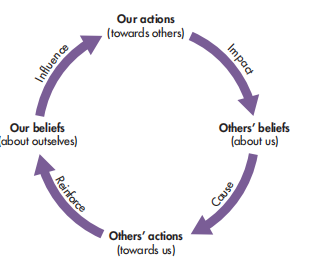
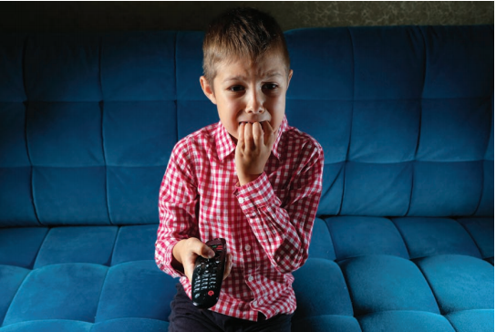
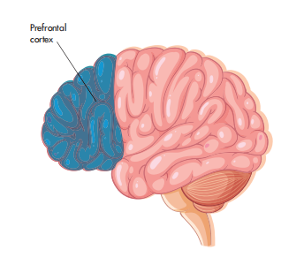

6.1.1 EXPLANATIONS FOR CRIME AND ANTISOCIAL BEHAVIOUR
Self-fulfilling prophecy · Social learning from the media · Antisocial personality disorder · 犯罪与反社会行为的解释
Learning Objectives 学习目标
- Define and separate criminal behaviour and antisocial behaviour — and say which one breaks the law.
- Explain crime in three ways: self-fulfilling prophecy, social learning from the media, and antisocial personality disorder.
- Attach the right study to the right theory: Rosenthal and Jacobson (1968), Jahoda (1954), Bandura et al. (1963), Williams (1986), Comstock and Paik (1994), and the ASPD evidence from twins and brain scans.
- Evaluate each explanation with at least one strength and one weakness you can state in a sentence.
- Use evidence to justify: when the question asks why a theory is credible, name a study and state its finding.
What this chapter is really asking
- Two words that look alike but are not the same. Crime breaks the law; antisocial behaviour causes harassment, alarm or distress without breaking any law. Exams test whether you keep them apart.
- Three explanations, three layers. Self-fulfilling prophecy explains crime through how other people treat you; social learning from the media explains it through what you watch and copy; antisocial personality disorder explains it through the person's own makeup.
- Each explanation needs a supporting study. Rosenthal and Jacobson (1968) and Jahoda (1954) for SFP; Bandura et al. (1963), Williams (1986) and Comstock and Paik (1994) for media SLT; twin and brain-scan studies for ASPD.
- The command word "justify" wants evidence. A theory is credible because a study supports it, so every justify answer needs one named study with its finding.
- Weaknesses follow one pattern: the evidence is only correlational, the research sits in education rather than crime, and no single explanation covers every offender.
1. Getting Started — Crime or Antisocial Behaviour?
Warm-up: list five types of crime, then list reasons why people commit them. The list gets long quickly, because crime has social, economic, mental-health and biological causes, and one crime can have several reasons behind it. That is why explaining criminal behaviour is hard, and why psychologists study the circumstances of each individual before looking for patterns across the offending population（整个犯罪人群）.
Criminal behaviour 犯罪行为
Committing a crime is breaking the law. Theft, assault and fraud are crimes, so they can be prosecuted in court.
Antisocial behaviour 反社会行为
Acting in a way that causes harassment, alarm or distress to others, which does not in itself break any law. Examples: being excessively noisy, not controlling animals, intimidating other people and making hoax calls（谎报险情一类的恶作剧电话）.
The antisocial behaviour order (ASBO)
If you are found to be committing antisocial behaviour in the UK you can be issued with an antisocial behaviour order, which lists what you cannot do. If you violate the order you can be prosecuted. The two terms have different meanings but are often used interchangeably, which is exactly the trap the exam sets.
判断标准只有一条：有没有犯法。砸别人窗户、偷东西是犯罪，走法律程序；半夜放音乐吵醒整栋楼、打骚扰电话吓人，让人难受但法律没写这些是罪，所以只能算反社会行为。不过反社会行为也不是没后果：政府可以下一张 ASBO，白纸黑字写清楚你不能做什么，违反这张单子本身就可以被起诉。两个词的判词只有一句：犯法的是犯罪，不犯法但害人的是反社会行为。
🤔 Quick decisionThink first
Making hoax phone calls that frighten people. Is this criminal behaviour or antisocial behaviour?
2. Explanation Map — Three Layers of Cause
This topic is organised into three explanations. Before going into each one, fix where each sits: one works through how others treat you, one works through what you observe and copy, one works through who you are.
三条解释各管一层，对比任何两种解释时，先报层次再展开：自我实现预言靠别人的期待起作用，媒体社会学习靠看到的榜样起作用，反社会人格障碍靠这个人本身的紊乱起作用。三个名字里有两个是纯社会解释，一个是生物解释，nature–nurture 这场辩论在这一章会反复出现。
3. Self-Fulfilling Prophecy
A classic example: a teacher believes you are not good at maths, so they treat you differently, hold lower expectations for your success and offer you limited opportunities to excel. That treatment damages your maths performance, and you end up underachieving, which proves the teacher's belief right. Applied to crime: a person is falsely labelled as criminal or antisocial, people around them expect trouble and treat them with suspicion, good behaviour gets ignored because it does not fit the label. Isolated from normal society, they may be drawn into criminal groups, internalise the label（内化标签：别人的眼光变成他自己的自我认知）, and commit an offence that confirms the expectation.
关键在于起点是假的：这个人本来没有犯罪倾向，只是被人贴了标签。四步循环记牢：贴标签 → 别人按标签对待他（好行为被无视）→ 他被孤立、内化标签 → 他真的去犯案，标签「应验」。应验之后循环还会加固，因为周围人会说「看吧，我早就说过」。所谓「预言」，就是假的期待最终变成了真的行为。
🤔 Quick checkThink first
Why is the initial label in a self-fulfilling prophecy described as "false"?
4. SFP Evidence and Evaluation
Two supporting studies
Rosenthal and Jacobson (1968) — the "bloomers" study
In San Francisco, USA, teachers were told that some students would learn more and more quickly than others. Students were labelled academic "bloomers"（「绽放者」，即被随机贴上「即将开窍」标签的学生） with great potential, but they had been allocated to this group randomly, not by intelligence. IQ was measured for all students at the start and end of the year. The bloomers' IQ rose significantly more than the non-bloomers', even though they were not the highest scorers at the start. Conclusion: teachers' expectations changed their behaviour towards students, and that behaviour changed the IQ scores.
Jahoda (1954) — the Ashanti day-names study
The Ashanti people of Ghana name boys according to the day they were born, with expectations attached to each day: "Monday" boys are considered quiet and placid; "Wednesday" boys are thought to be aggressive and short-tempered. After examining five years of records at a local juvenile court（少年法庭）, Jahoda found nearly 22 per cent of violent offences were committed by boys born on Wednesday, but only 6.9 per cent by boys born on Monday. Cultural expectations led to boys being treated according to their day-name, and many conformed to the label.

Evaluation
Strengths
- Experimental support exists. Rosenthal and Jacobson controlled the study well across a full school year and showed expectations changing measured outcomes (IQ).
- A crime-relevant example exists. Jahoda connects a label given at birth to violent offending rates in real court records, which moves the theory beyond the classroom.
- It explains why isolation matters. Being treated with suspicion pushes a person away from normal society and toward criminal groups, which fits observed reoffending patterns.
Weaknesses
- It cannot be tested experimentally on crime. The ethical and moral issues are so great that experiments are prevented, so the link can only ever be correlational（只证明相关，不证明因果）, and other variables may be influencing behaviour.
- The research base sits in education. Most SFP research examines teacher-child relationships; other relationships may not have the same effect, so applying it to criminality is limited.
- Beliefs are hard to measure. SFP is by definition a false belief, and beliefs are usually studied through self-report, which relies on insight, self-disclosure and honesty.
- It ignores other factors. Peer pressure, politics, biological factors and social or economic circumstances are all excluded, yet they also raise the likelihood of antisocial behaviour.
Wider issues and debates: nature–nurture
SFP emphasises environmental factors: what shapes offending is how people are treated, for example a child from an antisocial family being expected to offend too. But the theory ignores innate influences such as brain functioning or genetics, so on the nature–nurture debate it sits firmly on the nurture side, and that one-sidedness is itself an evaluation point.
证据侧记两句话：Rosenthal 和 Jacobson 证明期待能改变 IQ（贴「bloomer」标签是随机分的，IQ 却真的涨了），Jahoda 证明标签能挂到暴力犯罪上（星期三男孩 22% 对星期一 6.9%）。墙也有两面：伦理障碍让犯罪领域做不了实验，只能停留在相关；研究又大多在教育里做，换到其他关系未必成立。合起来看：相关不等于因果，而且生理、同伴、经济这些别的变量也可能在起作用。
5. Social Learning from the Media
Social learning theory is a social-cognitive theory that explains criminal behaviour as the result of modelling behaviour from observing it via the media or watching other people. The individual cannot learn offending behaviour without observing someone commit a crime, either directly (a peer) or indirectly (watching crime-related television). To reproduce the behaviour they must be motivated, which happens through vicarious reinforcement: watching a criminal get away with an offence or reap the rewards.
Two further points are specific to the media. On television, antisocial behaviour and criminality are often glamorised, and violence can be committed by "good guys". Criminal characters act as role models because they have power or share the viewer's gender, and they provide vicarious reinforcement when there is no punishment and only the sanitised effects（「消过毒」的版本：受害者的真实惨状不被播出） on victims are shown. At the same time the theory stresses cognition: a person may choose not to commit a crime immediately after observing it, and the behaviour can happen much later. News programmes documenting negative consequences can also discourage offending.
Activity 1: apply each key term to stealing
| Key term | Definition | Applied to stealing |
|---|---|---|
| Attention | Observing someone perform a behaviour | A teenager observed a friend shoplifting from a store. |
| Retention | Remembering the behaviour | The teenager remembers how the friend hid the item and left. |
| Role model | Someone we look up to, who may be of higher status and the same gender | An older friend the teenager admires is the shoplifter. |
| Reproduction | Copying the behaviour witnessed | On a later trip the teenager copies the same steps to steal. |
| Vicarious reinforcement | Witnessing the role model receive a reward for a behaviour | The friend got new clothes and was never caught, so stealing looks rewarding. |
五个词串成一条链：注意到行为 → 记住它 → 榜样有地位或同性别 → 稍后复制 → 看到榜样得利才更想复制。媒体的特殊角色在两头：开头它把罪犯包装成有魅力的强者，结尾它只播出「干干净净」的版本，不播受害者的惨状，替代强化就被放大了。别忘了理论里的认知成分：看和做之间可以隔很久，所以它叫社会认知理论。
🤔 Quick checkThink first
A teenager watches a film where a thief steals a car and lives comfortably, with no arrest shown. Which concept best explains why this viewing experience makes stealing more likely?
6. SLT Evidence and Evaluation
Three supporting studies
Bandura, Ross and Ross (1963) — experiment
Children copied aggression from watching a video recording of adults behaving aggressively towards a Bobo doll. Children were equally likely to copy aggression from a cartoon version where the aggressive adult was dressed as a black cat. This offers evidence that children copy antisocial behaviour from television. Limitation: the long-term impact was not followed up, so we do not know whether the children developed antisocial behaviour beyond the experimental context.
Williams (1986) — natural experiment
Tannis MacBeth Williams studied the introduction of television to a small community in British Columbia, Canada. Of the 16 young people she studied, after only two years of receiving television these children were twice as aggressive as two control groups from nearby communities who had grown up with television in varying amounts. Caveat from Williams herself: the increased aggression may have resulted more from an increased value placed on materialistic lifestyles than from the violence on television.
Comstock and Paik (1994) — meta-analysis of correlations
Many correlational studies reported a positive correlation between television violence viewed and aggressive behaviour, with an overall correlation coefficient of +0.19. Read this finding with three cautions: the correlation is not particularly strong; large sample sizes tend to make findings appear significant when they are not; correlations show relationships only, with no causality, no direction and no measure of third variables. Aggressive children may seek out violent programmes; a third variable such as social class may explain both (children of lower socioeconomic status watch more television and are also more likely to be delinquent, Flood-Page et al., 2000; sensation seeking is another candidate, Slater et al., 2004).

The overall conclusion
Despite a phenomenal amount of research using a range of methods, there is no unequivocal evidence（没有一项确凿证据） that links exposure to violence with aggression or antisocial behaviour. All the research indicates is that the relationship is neither simple nor straightforward. This nuance is exactly what an 8-mark answer should end on: the evidence supports some influence, but no single study nails observational learning as the cause of criminality.
Strengths of the evidence base
- Multiple methods converge. A lab experiment (Bandura), a natural experiment (Williams) and correlational meta-analysis (Comstock and Paik) all point in the same direction.
- Real-world relevance. Williams introduced actual television to a community, so the setting had ecological validity that a laboratory lacks.
Weaknesses of the evidence base
- Causality is missing. Correlations cannot establish cause, direction or third variables; the +0.19 coefficient is weak and inflated by large samples.
- Long-term effects unknown. Bandura's children were not followed up, so copying in the lab does not prove criminal development later.
- Alternative explanations survive. Williams blamed materialism, and social class plus sensation seeking both compete with media effects.
Bandura 补「孩子确实会照搬」，连卡通版都照搬，但实验室里演的只是当下；Williams 补「真引进电视后攻击翻倍」，可她自己都承认可能是拜金风气在起作用；Comstock 和 Paik 补「整体相关只有 +0.19」，弱得撑不起因果。三块合起来收束成一句：证据很多，但没有一项确凿：媒体确有影响，但它既不简单也不直接。
7. Antisocial Personality Disorder (ASPD)
ASPD, sometimes referred to as dyssocial personality disorder, is characterised by a persistent disregard for the rights of others. It can be diagnosed through official classifications such as the DSM-V (Diagnostic and Statistical Manual of Mental Disorders) and the ICD-11 (International Statistical Classification of Diseases and Related Health Problems), which give professionals clear guidance so people with the same symptoms receive consistent diagnoses.
Diagnosis requires three or more of these characteristics
- Disregard for social rules or respect for lawful behaviour, e.g. harassment, stealing
- Deceit and manipulation: lying, using aliases, conning others for personal or financial gain
- Impulsivity or failing to plan ahead
- Aggression and irritability, e.g. getting into fights
- Reckless disregard for their own or other people's safety, e.g. reckless driving
- Irresponsible behaviour, such as failing to honour work or financial obligations
- Lack of remorse for wrongdoing or harm
Four categories of offences and key facts
People with ASPD tend to commit one of four categories of offences: (1) aggression towards people or animals, (2) property offences, (3) theft or deceit, (4) serious violation of rules. Other features include arrogance, superficial charm, exploitativeness and failing to care properly for children. Prevalence is 1 to 4 per cent of the general population (Lenzenweger et al., 2007), higher in subgroups such as males with substance abuse in clinics or prison. It is much more common in males, but likely under-diagnosed in females because diagnosis emphasises aggressive characteristics. Diagnosis requires the person to be at least 18, with evidence of conduct issues（品行问题） before age 15; an individual's offending should not itself be used to diagnose the disorder.
七条特征里至少中三条才算数，而且要「不灵活、持续、造成功能损害或痛苦」才够临床诊断。两条年龄线别记反：18 岁前不能正式确诊，15 岁前必须已经有品行问题的证据。还有一条容易搞混的：犯过罪不等于有 ASPD，反过来有 ASPD 的人也不是必然犯罪，风险升高但没有到「必然」的程度。患病率记 1% 到 4%，男性多于女性，女性可能因诊断标准偏重攻击性而漏诊。
🤔 Quick checkThink first
Why can a person's offending behaviour not be used on its own to diagnose ASPD?
8. ASPD Evidence and Evaluation
Five supporting studies
| Study | Method | Finding |
|---|---|---|
| Hodgins and Côté (1993) | Compared offenders with and without an ASPD diagnosis | Offenders with ASPD had a significant history of offending during childhood and more convictions in adulthood than offenders without ASPD, suggesting the disorder carries a strong risk of offending. |
| Torgersen et al. (2008) | Assessed personality traits of 1386 twin pairs in a Norwegian sample using structured interviews, compared to DSM-IV criteria | Genetic heritability accounted for 38 per cent of twins diagnosed with antisocial personality traits. |
| Mason and Frick (1994) | Reviewed 12 twin and 3 adoption studies | 50 per cent of the variance in measures of antisocial behaviour was attributable to genetic factors. |
| Ferguson (2010) | Meta-analysis of 38 studies published 1996–2006, combined sample 96,918 | Genetic factors accounted for 56 per cent of the variance in antisocial personality and behaviour, supporting a biological basis for criminality. |
| Yang and Raine (2009) | Meta-analysis of 43 brain-imaging studies (structural and functional) | Significantly reduced grey matter and reduced function in the PREFRONTAL CORTEX (the area that moderates aggression（压制攻击冲动）) in individuals displaying antisocial behaviour; differences also found in the amygdala and temporal lobe. The impairment could be inherited or acquired through brain damage. |
| Simonoff et al. (2004) | Longitudinal study of 225 childhood twin pairs diagnosed with conduct disorder | Conduct disorder in childhood predicted ASPD in adulthood in those showing criminal behaviour 10–25 years later, supporting the before-age-15 rule and pointing to early identification and intervention. |

Evaluation
Strengths
- Converging biological evidence. Twin data (38%, 50%, 56% heritability estimates) and brain scans (prefrontal cortex) all point the same way, which is what a "justify" answer needs.
- Longitudinal support. Simonoff's 10–25 year follow-up shows childhood conduct problems predicting adult ASPD, matching the diagnostic age rule.
- It explains the offender profile. Impulsivity, aggression and lack of remorse map directly onto persistent, serious offending.
Weaknesses
- Diagnosis is complicated by comorbidity (the presence of more than one disorder in the same person): anxiety, depression, substance misuse and ADHD often co-occur and blur the picture.
- Environmental confounds remain. ASPD is more common with low socioeconomic status and urban living; those factors may contribute, or the subgroup may behave in ways that merely resemble the disorder and get misdiagnosed.
- Risk is not destiny. Offending risk is elevated but not inevitable: some people with ASPD never offend and hold jobs and relationships; severity, comorbid conditions and upbringing all shift the risk.
- Cause is still debated. Both genetic and environmental causes are widely believed to combine, so no single pathway is established.
生物证据按「遗传到脑」的顺序背：Torgersen 双胞胎 1386 对 38%、Mason 和 Frick 50%、Ferguson 96918 人 56%、Yang 和 Raine 43 项脑扫描发现前额叶灰质减少。前额叶管压制攻击，功能弱了人就更容易动手。反向证据也要备着：共病（comorbidity，一个人身上同时有多个障碍）搅浑诊断，环境因素（低收入、城市生活）既是原因也可能是误诊来源，而且 ASPD 患者不犯罪、正常生活的也大有人在。证据和限制各管一头，都要备齐。
9. Checkpoint
Check your understanding
1. Which key term belongs with each theory? A boy is labelled a troublemaker at school, is treated with suspicion by every teacher, and eventually starts offending.
2. Which pair of key terms belongs with social learning theory?
3. Jahoda (1954) found nearly 22 per cent of violent offences were committed by boys born on which day, versus 6.9 per cent on which day?
4. Why can the link between self-fulfilling prophecy and antisocial behaviour never be proven experimentally?
5. Yang and Raine (2009) meta-analysed 43 brain-scan studies. What did they find?
6. How many of the seven ASPD characteristics must be present for diagnosis, and by what age?
10. Exam Lab
Question 1 — ASPD
(a) Describe antisocial personality disorder (ASPD) as an explanation of criminal and antisocial behaviour. (2) (b) Justify how ASPD can be considered a credible explanation of criminal and antisocial behaviour. (2)
✍️ 1a — Describe2 marks
ASPD is a clinically diagnosed personality disorder characterised by a persistent disregard for the rights of others, with three or more features such as disregard for social rules, deceitfulness, impulsivity, aggression, recklessness and lack of remorse. A diagnosis can only be made from age 18, with evidence of conduct issues before age 15, so a person with the disorder is at elevated risk of offending.
✍️ 1b — Justify2 marks
ASPD is credible because research evidence supports it: Ferguson (2010) meta-analysed 38 studies with a combined sample of 96,918 participants and found genetic factors accounted for 56 per cent of the variance in antisocial personality and behaviour, and Yang and Raine (2009) found reduced prefrontal grey matter in 43 brain-scan studies. Converging genetic and neurological evidence makes the explanation credible.
命令词 justify 要你给决定找理由，公式是「证据让理论可信」：一句理论立场，加一个带数字的研究，两句收工。挑 Ferguson（56%）或 Yang 和 Raine（前额叶）都行，别只写「很多研究支持」这种没有名字的空话。
Question 2 — SFP
Justify self-fulfilling prophecy as an explanation for crime and antisocial behaviour. (2)
✍️ 2 — Justify SFP2 marks
SFP is credible because Jahoda (1954) found that among the Ashanti, boys named after "aggressive" days such as Wednesday committed nearly 22 per cent of violent offences compared with 6.9 per cent for "placid" Monday boys, showing that a label given at birth can shape offending. Rosenthal and Jacobson (1968) add experimental support: randomly labelled "bloomers" gained significantly more IQ, so expectations really do change behaviour.
Question 3 — Luca and violent video games
Luca enjoys playing violent video games in which he fights other characters. He is very good at winning and has recently won an online competition for being the most successful player. His parents have noticed he is more aggressive at home, often fighting with his younger brother, and he has started getting into trouble at school for fighting in the playground.
✍️ 3 — Discuss how SLT could account for Luca's aggression8 marks
Frame your answer: AO1 theory chain → apply each link to Luca → evaluation or alternative view → conclusion.
AO1: social learning theory explains criminal and antisocial behaviour as modelling from observed models, with motivation supplied by vicarious reinforcement; behaviour can be reproduced later. Application: Luca attends to the fights in his video games (attention), remembers successful fighting techniques (retention), and the game's winning players act as role models. Winning the online competition is powerful vicarious reinforcement: Luca sees fighting skill rewarded with status, and punishment is absent, much like the sanitised media portrayals described earlier in this chapter. He then reproduces the behaviour at home against his brother and in the playground (reproduction), which matches the theory's claim that copying can happen well after observing. Evaluation: Bandura, Ross and Ross (1963) support the chain, since children copied filmed aggression, including from a cartoon; however, Comstock and Paik's (1994) overall correlation of only +0.19 shows the media-aggression link is weak, and third variables such as frustration, family modelling or sensation seeking could explain Luca's fights instead. Conclusion: SLT offers a coherent account of how Luca's aggression was learned through observation and reward, but it cannot be confirmed as the sole cause.
Luca 这题的关键是五个术语一个不落地挂到他身上：看的比赛是注意，记招式是保持，冠军玩家是榜样，自己赢比赛是最强的替代强化，打弟弟、打同学是复制。然后才给评价：Bandura 支持链条成立，Comstock 和 Paik 的 +0.19 提醒媒体效应有限，第三变量要留一句。结构按「理论 → 应用 → 评价 → 收束」四步走，8 分刚好铺满。